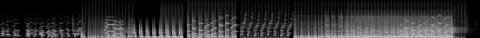

Afterlight / V Mosaic / AFL-13
V · Mosaic · AFL-13 of 21 · 1:24
Takumi Archive
The note that produced it
On this track: Use only the first 29 seconds.
“I want each to be a mosaic assemblage of the tracks, never the whole track. Each a separate video experiment to see the samples, get the groove. Aim for 1–2 minutes per track.”
“A different attempt and technology for each Afterlight song / music video experiment”: readable as embers from their spectrograms, as Gaussian splats of places.
What was made
A 1950s television set. Every cut in the music changes the channel; the last picture’s phosphor keeps glowing and sheds embers; at the end the set switches off to a line and a dot.
Three phrases at 0:00, 0:09, 0:18 re-cut in sixteenths like a turning dial · three-quarter tape speed · CRT mask and curvature
What came back
The note on this version, which produced AFL-14 Warm Phosphor:
The loop after 0:43.
Images made while working: contact sheets, check frames, spectrograms, the stills compared before and after a fix. Tap one to see it full size.




No separate critic agent was run on this cut. The critique came from the director, in the notes on either side of it.
On the cut before
Use only the first 29 seconds.
On this cut
The loop after 0:43.
Sample map
Every sound placed in the 1:24 study, 74 events by layer, coloured by the track it was cut from. The bars under the map are the whole source tracks; the lit spans are the parts actually used (approximate: stretched and frozen samples are counted by where they start).
The recipe
The function that composed this study, exactly as it ran.
def takumi():
"""1956 commercial sunshine: two-bar phrases from the first 29 s, re-cut like a channel flipping, then slowed into tape warmth"""
n = 'takumi'; P = 4.82; m = Mix(96)
A, B, C = snap(n, 0.21), snap(n, 8.93), snap(n, 18.35)
m.put('bed', freeze(cut(n, 9, 13), 9) * 0.5 * np.linspace(0, 1, 9 * SR)[:, None], 0, 0.5, n, 9, 'freeze')
m.put('bed', crackle(84, 30, 0.05), 0, 1.0, None, None, 'crackle')
t = 4.0
m.put('loop', sweep(loop(n, A, P, 2), 300, 16000), t, 1.0, n, A, 'loopA'); t += 2 * P
m.put('loop', loop(n, B, P, 2), t, 1.0, n, B, 'loopB'); t += 2 * P
# channel flip: eighth-note slices switching between the three phrases
sa, sb, sc = steps(n, A, P, 16), steps(n, B, P, 16), steps(n, C, P, 16)
st = P / 16
for bar in range(4):
for i in range(16):
j = (i // (2 if bar < 2 else 1) + bar) % 3; src = [sa, sb, sc][j]; k = i if bar % 2 == 0 else (i * 5) % 16
m.put('flip', src[k], t + (bar * 16 + i) * st, 1.0, n, round([A, B, C][j] + k * st, 3), 'flip')
t += 4 * P
# the slow room: phrase C at three-quarter speed, pitched with it, into a long tail
slow = resample(loop(n, C, P, 2), 0.75)
m.put('slow', slow, t, 0.9, n, C, 'slow'); m.put('ember', ember(slow[-SR * 2:], 12, 0.5), t + len(slow) / SR - 2, 1.0, n, C, 'tail')
t += len(slow) / SR
m.put('loop', loop(n, A, P, 2), t, 1.0, n, A, 'loopA'); m.put('loop', echo(cut(n, B, B + P / 2), P / 4, 0.55, 8), t + 2 * P - P / 2, 0.8, n, B, 'echo')
t += 2 * P
m.put('loop', tapestop(loop(n, B, P, 1), 1.2), t, 1.0, n, B, 'tapestop')
m.put('ember', ember(cut(n, B + P - 1.5, B + P), 16, 0.7), t + P - 1.5, 1.0, n, B, 'tail')
return mThe picture technique
class CRT:
"""1956 television: the archive comes in through a phosphor screen; every cut in the music is a channel flip,
and each flip leaves the last picture's phosphor glowing while embers lift off it."""
def __init__(s, ctx, cats=('stu', 'rit', 'mir', 'lam', 'chi'), seed=1):
s.c = ctx; s.clips = [clip_frames(i, 320, 240, 12, 10) for i in footage(cats, 9, seed)]
s.ch = 0; s.buf = np.zeros((H, W, 3), np.float32); s.emb = Embers(20000, 3); s.roll = 0.0; s.last = -1
s.cuts = sorted(set(round(e['t'], 2) for e in ctx.events if e['layer'] in ('flip', 'loop', 'a', 'slow', 'echo')))
xm = (np.arange(W) % 3); s.mask = np.stack([(xm == 0) * 0.55 + 0.45, (xm == 1) * 0.55 + 0.45, (xm == 2) * 0.55 + 0.45], -1)[None].astype(np.float32)
s.scan = (0.72 + 0.28 * (np.sin(np.arange(H) * math.pi / 2.0) ** 2))[:, None, None].astype(np.float32)
def frame(s, t, dt):
c = s.c; k = sum(1 for x in s.cuts if x <= t)
if k != s.last:
s.last = k; s.ch = (s.ch + 1 + k % 3) % len(s.clips); s.roll = 1.0
# the old picture's brightest points lift off as embers
L = s.buf.mean(2); ys, xs = np.nonzero(L[::6, ::6] > 0.45); idx = np.random.default_rng(k).permutation(len(xs))[:500]
s.emb.emit(xs[idx] * 6.0, ys[idx] * 6.0, vx=30, vy=-50, T=0.9, life=2.5)
cl = s.clips[s.ch]; slow = c.e('slow', t) > 0.05
fi = int(t * (9 if slow else 12)) % len(cl); f = cl[fi].astype(np.float32)
img = cv2.resize(f, (960, 720), interpolation=cv2.INTER_LINEAR)
frame = np.zeros((H, W, 3), np.float32); frame[:, 160:1120] = img
s.roll *= 0.75
if s.roll > 0.02:
frame = np.roll(frame, int(s.roll * 260), 0)
band = (np.sin(YY[:, :1] * 0.05 + t * 40) > 0.6) * s.roll; frame = frame * (1 - band[..., None] * 0.6) + band[..., None] * 0.35
lum = frame @ np.array([0.3, 0.59, 0.11], np.float32)
warm = frame * np.array([1.0, 0.82, 0.6], np.float32) * 0.75 + thermal(lum * 0.8 + 0.1) * lum[..., None] ** 0.8 * 0.35
warm *= (0.85 + 0.35 * c.kick(t, 0.25) + 0.25 * c.e('_mix', t))
s.buf = np.maximum(s.buf * 0.80, warm) # phosphor persistence
out = s.buf * s.mask * s.scan * 1.25
out = cv2.remap(out, CRT_MX, CRT_MY, cv2.INTER_LINEAR) * CRT_GLASS
out = out + gaussian_filter(out, (6, 6, 0)) * 0.35
# the sound as a test pattern: the mosaic's spectrum in a phosphor band along the bottom
col = c.melcol(t); bars = np.zeros((90, W), np.float32)
xs = (np.arange(128) / 128 * (W - 320) + 160).astype(int)
for i, v in enumerate(col):
h = int(v ** 2 * 80); bars[90 - h:, xs[i]:xs[i] + 5] = v ** 1.5
out[H - 110:H - 20] += bars[..., None] * AMBER * 0.6
s.emb.step(t, dt, wind=(40, -20)); out += s.emb.draw(t, 0.8)
# the set switches off at the end: the picture folds to a line, then a point
off = sm(c.dur - 3.2, c.dur - 1.6, t)
if off > 0:
hh = max(2, int(H * (1 - off) ** 3)); m = np.zeros((H, W, 1), np.float32); m[H // 2 - hh // 2:H // 2 + hh // 2 + 1] = 1
out = out * m * (1 + 3 * off); p = sm(c.dur - 1.6, c.dur - 0.6, t)
if p > 0: out = out * (1 - p) + np.exp(-((XX - W / 2) ** 2 + (YY - H / 2) ** 2) / (30 + 400 * (1 - p)))[..., None] * 2 * (1 - p * 0.7)
return outFiles
The scripts that made this version, as plain text.
- compose.py254 linesthe nine mosaics: every cut, loop and freeze
- sampler.py154 linesloop, stretch, reverb, echo, freeze, tape stop
- mix.py85 linesthe 178-second set
- sound_design.py91 linesneedle drop, inhales, risers, sub, tape bus
- engines.py367 linesthe ten picture techniques
- vis_common.py106 linesshared embers, archive frames, the finish
- render.py41 linesrenders frames and encodes
- analyze.py21 linestempo and onsets of each source track
A film concept by Sosuke & Watson · CRASH LAB · PAELEO · CINEOSIS LAB